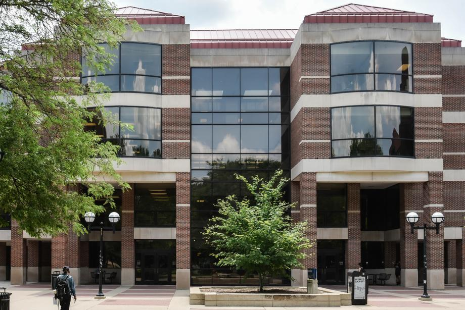
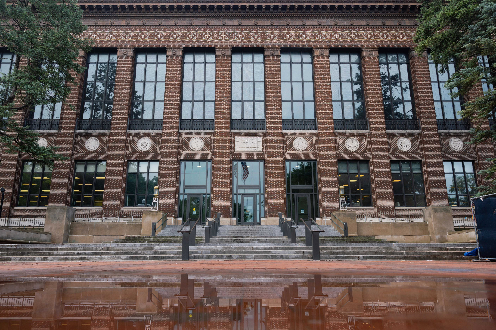
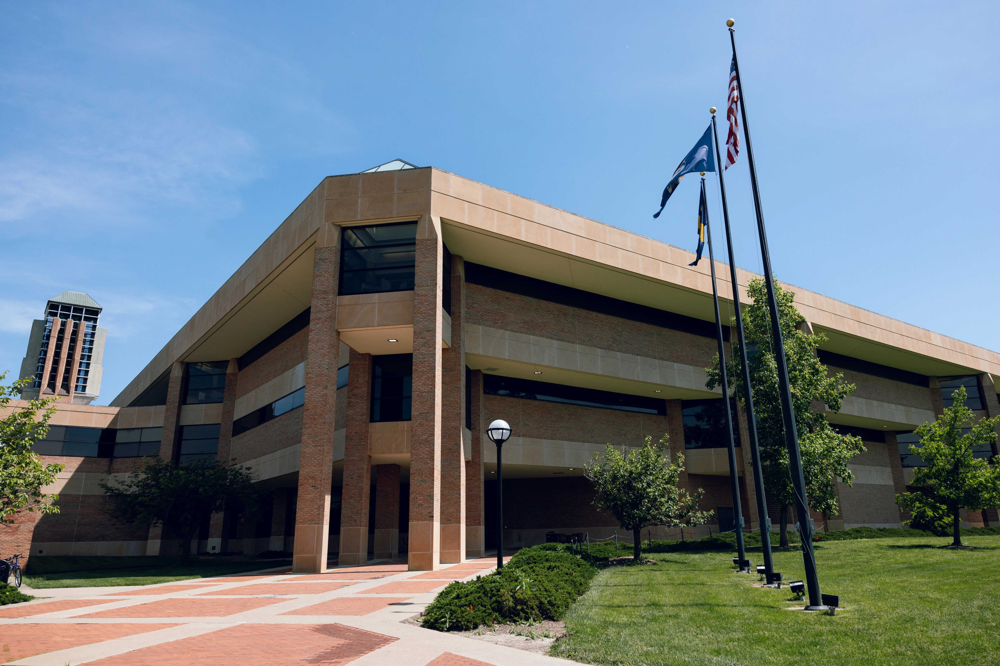
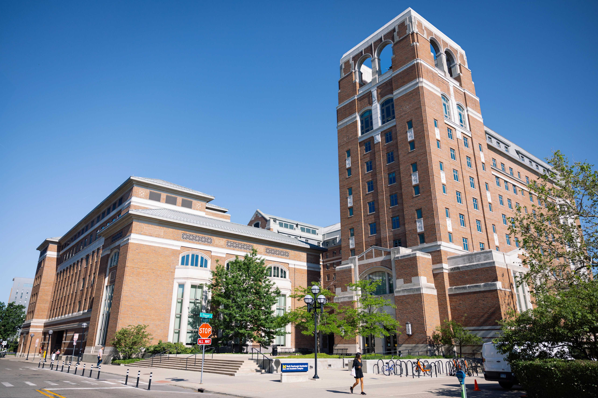

Discover the best places on campus to focus and collaborate on coursework.
Shapiro Undergraduate Library

The Shapiro Library, officially known as the Shapiro Undergraduate Library, is a central resource for University of Michigan students, providing a welcoming space dedicated to undergraduate education and collaborative learning. Located on the Ann Arbor campus, Shapiro offers a diverse range of services, including study spaces, access to extensive digital and print collections, and technology support. Students can take advantage of group study rooms, computer workstations, and the Academic Innovation Lab, which fosters creativity and exploration. Additionally, the library hosts workshops and events that enhance research skills and academic success.
To arrive at Shapiro Library, located at 919 South University Avenue, students can walk from central campus, as it is conveniently situated adjacent to the Diag, a popular gathering spot in the heart of the university. Those utilizing public transportation can take one of several buses that stop nearby. The library's central location and proximity to other campus landmarks, like the Michigan Union and Angell Hall, make it a highly accessible and integral part of students' daily academic lives. Whether for a quiet study session or a group project meeting, Shapiro Library serves as a vibrant hub for Michigan's undergraduate community.
Hatcher Graduate Library

The Harlan Hatcher Graduate Library, commonly referred to as Hatcher, is one of the University of Michigan's primary libraries and a significant academic resource, particularly for graduate students and researchers. Situated at the edge of the Diag on the Ann Arbor campus, Hatcher offers access to a vast collection of both physical and digital resources, specialized subject librarians, and various quiet and collaborative study spaces. The library is also home to several unique collections and archives, making it an invaluable asset for in-depth research across disciplines.
To get to Hatcher Library, located at 913 South University Avenue, students often start by heading to the Diag, the central open space at the heart of the university. The nearest major landmark is the iconic Burton Memorial Tower. For those using public transit, numerous campus buses have stops nearby, making the library easily accessible from different parts of Ann Arbor. Additionally, it's within walking distance from the Michigan Union and other central campus buildings. Hatcher's prominent location on campus makes it a convenient and vital destination for students and faculty looking to engage with the university's extensive academic resources.
Duderstadt Center

The Duderstadt Center, affectionately known as "the Dude," is a vibrant hub of creativity and innovation located on the University of Michigan's North Campus. Officially called the James and Anne Duderstadt Center, it serves as an interdisciplinary space where technology, art, and engineering converge. The center houses a variety of resources, including the Digital Media Commons, advanced labs, and studios for video, audio, and 3D work, making it a haven for students pursuing projects that require cutting-edge technology and collaboration. The Dude also features extensive study spaces, computer workstations, and the Art, Architecture & Engineering Library, supporting a range of academic needs.
To reach the Duderstadt Center, students can take advantage of the university's free bus service, which connects North Campus to Central Campus. Buses like the Bursley-Baits or Northwood routes provide frequent service, stopping near the main entrance of the center. For those driving, parking is available in nearby lots, although it can be limited during peak hours. With its modern architecture and central location on North Campus, the Duderstadt Center is easily identifiable and accessible, making it a cornerstone for students involved in engineering, art, music, and beyond.
North Quad Spaces

North Quad at the University of Michigan is a dynamic living and learning community that blends residential life with academic facilities in a vibrant setting. Located on the corner of State Street and Huron Street, North Quad offers modern amenities and housing for students, along with classrooms and collaborative spaces used by several university departments. It is home to the School of Information, the Department of Communication and Media, and the Residential College, among others, fostering an interdisciplinary environment where students and faculty can engage in creative and intellectual exchange.
To reach North Quad, students can simply walk from the central campus area, as it is just a few blocks north of the Diag. Its proximity to downtown Ann Arbor also provides easy access for those coming from other parts of the city. Several university buses stop nearby, facilitating convenient transit for students traveling from different campuses or off-campus locations. With its architecturally distinctive design and a mix of academic and residential functions, North Quad serves as a lively and integrated community that enriches the student experience at the University of Michigan.